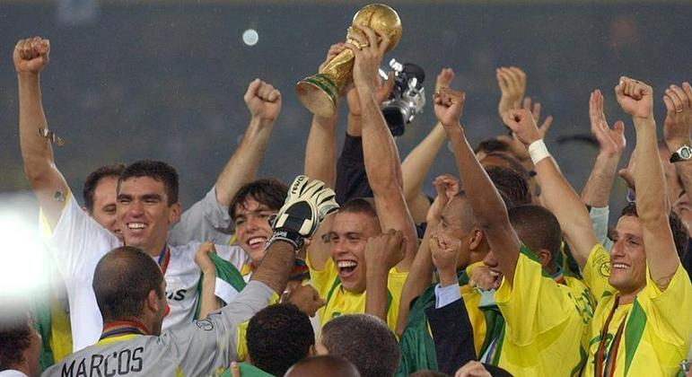

Copa do Mundo Catar 2022
A 22° Copa do Mundo masculina da FIFA começa em novembro, no Catar. Você sabe quais são as equipes participantes? Quais equipes estão divididas nos grupos? Quais serão os incríveis estádios dos jogos? Qual será os dias dos jogos? E quem é o mascote da Copa? Se sua resposta for sim ok, mas se sua resposta foi não fica aí que eu vou te contar tudo!
Por: Jackson ReisO maior campeonato de futebol do planeta, irá acontecer no Catar. Neste campeonato encontra-se as melhores seleções de todos os continentes. Um espetáculo que reune as pessoas de todos os lugares do planeta, as diferentes culturas, e o amor pelo futebol.

Onde será realizada a Copa do Mundo?
A Copa do Mundo será sediada no Catar, país no continente asiático. A capital do Catar é Doha, conhecida pelos arranha-céus futuristas e pela arquitetura ultramoderna inspirada no antigo design islâmico.

Quais são os
participantes?
Foram 32 equipes classficadas são elas:
- Catar
- Argentina
- Brasil
- Inglaterra
- França
- Espanha
- Bélgica
- Portugal
- Alemanha
- Países Baixos
- Uruguai
- Croácia
- Dinamarca
- México
- Estados Unidos
- Senegal
- País de Gales
- Polônia
- Austrália
- Japão
- Marrocos
- Suíça
- Gana
- República da Coreia
- Camarões
- Sérvia
- Canadá
- Costa Rica
- Tunísia
- Arábia Saudita
- República Islâmica do Irã
- Equador
E os grupos?
As equipes foram divididas em 8 grupos, com 4 times em cada um.
Os vencedores somam 3 pontos, enquanto cada equipe recebe 1 se a partida terminar empatada. Os perdedores não pontuam. Ao final da fase de grupos, as duas primeiras equipes que somarem mais pontos em cada grupo se classificam para fase eliminatória.
Tá, mas quem está em quais grupos?
Local do jogos
Os jogos serão realizados nos seguintes estádios:
- Lusail
- Al Bayt
- Complexo Esportivo Al Wakrah
- Estádio da Cidade da Educação
- Estádio 974
- Ahmad Bin Ali
- Khalifa Internacional
- Al Thumama
Cronograma
Calendario básico dos jogos da Copa do Mundo Catar 2022:
- 20 de novembro de 2022: cerimônia de abertura, e jogo inaugural pelo Grupo A (Catar x Equador);
- 2 de dezembro de 2022: rodada final dos jogos da fase de grupos
- 3-6 de dezembro: oitavas de final
- 9 a 10 de dezembro: quartas de final
- 13-14 de dezembro: semifinais
- 17 de dezembro: partida válida pelo terceiro lugar
- 18 de dezembro: final
Mascote oficial: La'eeb
O mascote oficial da Copa do Mundo Catar 2022 é o: La'eeb
"La'eeb é uma palavra árabe que faz referência a um jogador super habilidoso. Ele pertence a um indescritível mundo paralelo de mascotes. Todos são convidados a interpretar o que parece", segundo o site da FIFA.